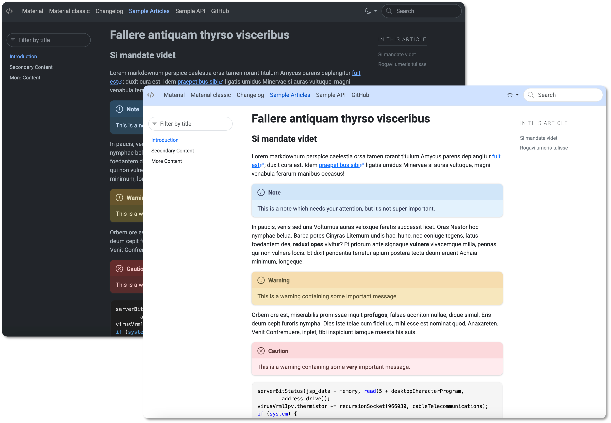

DocFX Material
A simple material theme for DocFX. This is an
override of the modern template so you need to enable both in the docfx.json.
The design was inspired by https://m3.material.io/.
If you are looking for the previous version of docfx-material that doesn't use the modern template you can still get it as material-classic.

Install
- Download the source or the zipped file from the releases.
- Create a
templatesfolder in the root of your DocFX directory. - Copy the
materialfolder to thetemplatesfolder. - Update the
docfx.jsonconfiguration to include the material template:
{
"template": [
"default",
"modern",
"templates/material"
],
}
Color customization
DocFX's modern template is based on Bootstrap 5 (version 5.3 at the time of writing) so you can use Bootstrap's CSS variables to customize a lot of the colors.
Here are some of the most common customizations that can be made in the template's
CSS file material/public/main.css, like updating the header color, changing the font,
/* Changing the navbar color only for the light theme */
[data-bs-theme='light'] nav.navbar {
background-color: var(--bs-primary-bg-subtle);
}
/* Change active navlink color */
.navbar-nav .nav-link.active,
.navbar-nav .nav-link.show {
color: var(--bs-link-hover-color);
}
/* Changing the site font */
@import url('https://fonts.googleapis.com/css2?family=Roboto:wght@100;400;700&display=swap');
:root {
...
--bs-font-sans-serif: 'Roboto';
...
}
Markdown extras
For more reference about markdown support in DocFX check the official documentation.
Note
This is a note which needs your attention, but it's not super important.
Warning
This is a warning containing some important message.
Caution
This is a warning containing some very important message.
DocFX tips
Enable search
To enable search in DocFX it's not enough to set the configuration parameter to true:
"globalMetadata": {
"_enableSearch": "true"
}
You also have to indicate in the docfx.json the post processor that generates the index for the searches:
"postProcessors": ["ExtractSearchIndex"],